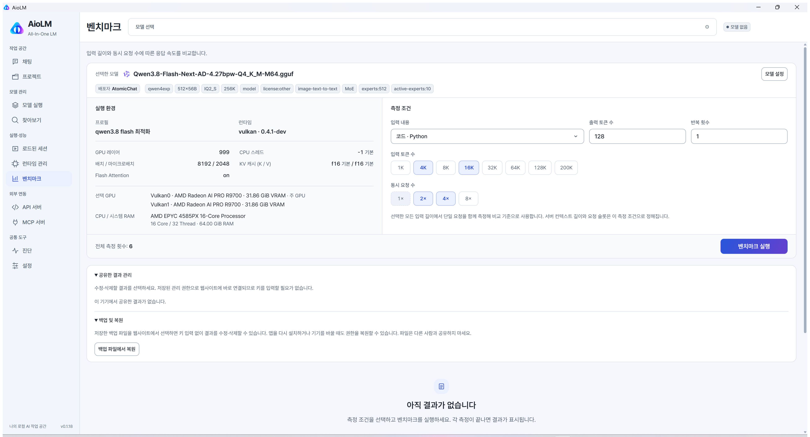

Portfolio / Web developer
복잡한 것을쓸 수 있게.
기술의 동작 원리를 탐구하고, 사용자에게 필요한 경험으로 연결합니다. 웹 개발자 장주원입니다.
선택한 작업 살펴보기 ↘THINK DEEPLY
MAKE IT USEFUL ↗
Curiosity into practice · Better ways to work · Curiosity into practice
01 / Featured work
Client AX PoC
질문에서
데이터까지.
고객사 AX PoC · 자연어 SQL 변환과 RAG비개발자도 내부 데이터를 조회할 수 있도록. 자연어와 데이터 사이의 거리를 줄이는 PoC 개발에 참여했습니다.
The idea / 01—03
데이터는 안에 두고,
질문은 쉽게.
아래의 세 단계를 선택해 프로젝트의 접근 방식을 살펴보세요.
질문을 데이터 조회로
자연어를 SQL로 변환해 비개발자가 고객사 내부 데이터를 조회하도록 돕는 서비스의 PoC 개발에 참여했습니다.
구성 오픈웨이트 모델 로컬 서빙 · Jira → PostgreSQL · RAG
함께한 일 개인적으로 학습한 로컬 LLM 정보를 팀원들과 공유했습니다.
02 / Selected work
두 가지 작업을 선택해 보세요
만들고,
다듬고.
고객사의 업무 환경부터 개인 프로젝트까지, 문제에 맞는 방법을 찾습니다.
B2B / 구축형 정보시스템
현장의 일을 위한
더 나은 기반
산업 현장의 안전보건 관리 업무를 디지털화하는 SafetyOne을 바탕으로, 고객사 요구에 맞춘 B2B 구축형 정보시스템 개발에 주로 참여했습니다.
- nginx 설정 점검 및 HTTP/1.1에서 HTTP/2로 전환
- 정적 리소스 전송과 서버 응답 흐름 개선
- 사용자 권한 관리, 웹뷰 인증·인가 개선
HTTP/2 전환 글 읽기 ↗HTTP/2 전환 · nginx 설정 최적화
2025.1020%도메인 전체 평균 서버 응답 시간
약 20% 개선
Personal project / Desktop + web
로컬 LLM의 성능을
직접 측정하고 공유하다
기기 구매와 실행 환경 선택을 돕기 위해 로컬 LLM 실측 데이터를 공유하는 데스크톱 앱과 웹사이트를 기획하고 개발했습니다.
- 모델·런타임 관리와 로컬 벤치마크
- 모델·기기·측정 조건별 결과 탐색과 비교
- Windows 앱과 벤치마크 웹사이트 공개 및 지속 개선
벤치마크 웹사이트 ↗앱 저장소 ↗웹 저장소 ↗
AioLM / 실제 앱 화면사용자 경험과 접근성을 개선할 방법을 고민합니다. 사용하는 기술의 동작 원리를 깊이 공부하고, AI를 적극 활용해 개발 프로세스를 개선합니다.
- 경력
- (주)커리어넷 · Next.js 풀스택 개발자
2025.04 ~ 재직 중 - 주요 기술
- TypeScript · React · Next.js
- 관심
- UX · 접근성 · 로컬 LLM · AI 활용